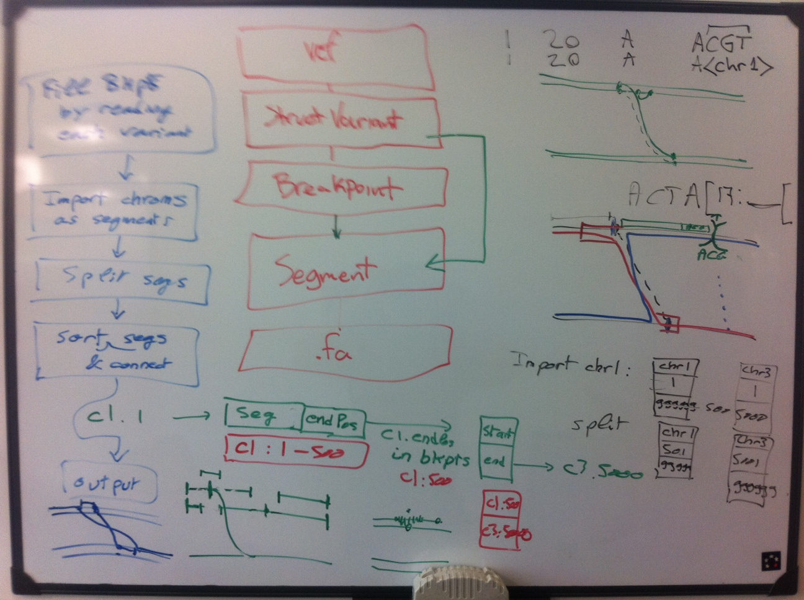
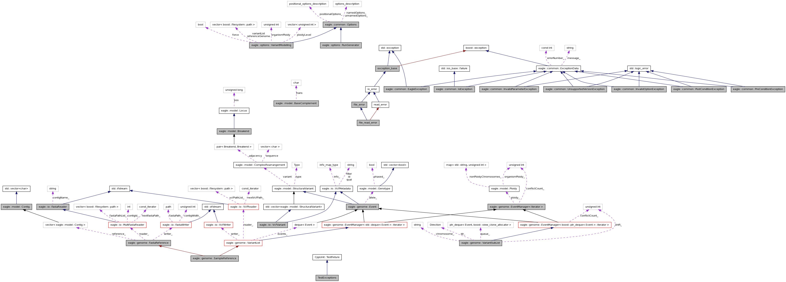
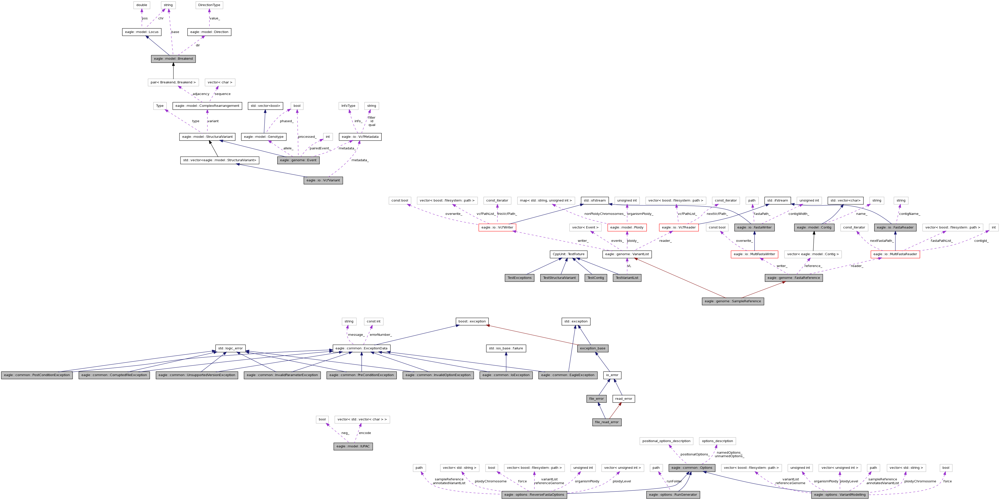

Introduction
The genome mutator (previously called variant modeller) went through a series of architectures before reaching the current one.
In order to avoid repeating the same mistakes, each architecture/design is quickly described here.
Architecture 1: First prototype
The list of variants is read to RAM as a double-linked list.
It is then sorted (by variant starting position), and a double-linked list of segments is produced.
The list of segments is then re-ordered by taking into account translocation and deletion variants, which skip some variants.
The output is generated by following the list of segments, fetching the appropriate contigs and writing them to a new fasta file.

Problems:
- Processing time becomes too high when millions of variants need to be handled.
- Processing reverse strands had some cases not implemented.
Architecture 2: tagged version 0.1
The list of variants is read to RAM as a deque and then sorted.
All the input reference fasta files are also read to RAM.
For each chromosome, its set of alleles (e.g. 2 for a diploid chromosome output) is processed together in order to be able to handle conflicts between variants: when 2 variants are conflicting (modifying the same reference base), one allele would follow one path of variants while the other allele would follow the other path.
The main architecture aspect was the sublist of variants dynamically created for each allele for each contig to be processed. It was dynamically updated if a translocation was making it jump to another chromosome, and wasn't including events that were in the opposite direction than the one being currently processed.
A complex set of classes was introduced for this (right-click to see more details):

Problems:
- Small bugs (especially to handle reverse strand processing) kept appearing.
- Handling of the detected conflicts became too complex: the necessity to count how many times each side of a translocation was used became apparent and we decided to move to the next architecture
Architecture 3: current version
This is a simplified version of the previous architecture, where the variants list is kept as a vector and an iterator is used to walk through the variants.
Each variant is paired to its "opposite" variant, which is a separate object for translocations and deletions, but is itself in the case of SNP and insertions (as they appear at the same position regardless of the current processed strand direction).
The iterator skips the already-processed variants and those representing variants in the opposite direction, applies the first valid variant and jumps to the paired variant to continue its processing. Marking both variants as processed allows us to process each variant only once. Conflicting variants are automatically skipped when the first allele is being processed (because of the jump to the paired event), and will be processed later on subsequent alleles. If there are more conflicts than alleles, some variants are detected and reported as "not-applied" at the end of the run.

{kind=link}
{kind=link}
{kind=link}